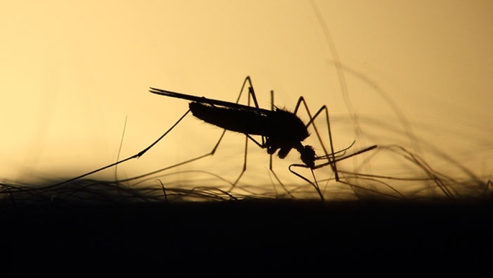

El dengue es una de las enfermedades que más preocupa en la República Argentina, además del coronavirus. Se contagia a través de la picadura del mosquito Aedes aegypti, que se alimenta con sangre de una persona enferma de dengue y luego pica a otras.
El contagio se produce únicamente por la picadura de los mosquitos infectados, pero nunca de una persona hacia otra ni a través de objetos, ni la leche materna. Según informan las autoridades en salud, las mujeres embarazadas pueden contagiar a sus bebés durante el embarazo, aunque es poco común.
Los síntomas pueden ser: fiebre acompañada de dolor detrás de los ojos, de cabeza, muscular o de articulaciones. Además, vómitos y nauseas, cansancio intenso, aparición de manchas en la piel y picazón y/o sangrado de nariz y encías.
La manera de prevenirlo es la eliminación de todos los criaderos de mosquitos, fundamentalmente los recipientes que contienen agua, en donde el insecto se cría. Es clave evitar el uso de baldes, palanganas o tambores que acumulen agua estancada.
Para curarse del dengue no existe un tratamiento específico, por eso se recomienda seguir las indicaciones de los médicos.